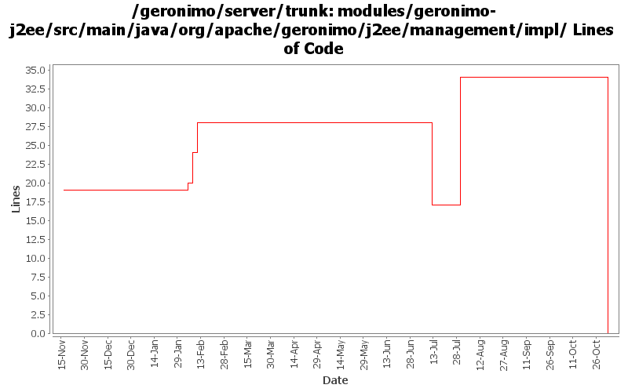

[root]/modules/geronimo-j2ee/src/main/java/org/apache/geronimo/j2ee/management/impl

| Author | Changes | Lines of Code | Lines per Change |
|---|---|---|---|
| Totals | 26 (100.0%) | 49 (100.0%) | 1.8 |
| dwoods | 1 (3.8%) | 34 (69.4%) | 34.0 |
| djencks | 1 (3.8%) | 8 (16.3%) | 8.0 |
| akulshreshtha | 1 (3.8%) | 4 (8.2%) | 4.0 |
| ccardona | 1 (3.8%) | 3 (6.1%) | 3.0 |
| vamsic007 | 1 (3.8%) | 0 (0.0%) | 0.0 |
| prasad | 7 (26.9%) | 0 (0.0%) | 0.0 |
| kevan | 14 (53.8%) | 0 (0.0%) | 0.0 |
GERONIMO-3565. Modules distributed amongst framework/modules and plugins
0 lines of code changed in 7 files:
GERONIMO-2878 JVM stats exposed through JMX are incorrect
34 lines of code changed in 1 file:
GERONIMO-3312 Eliminate obselete org.apache.geronimo.management.geronimo.J2EEServer.getLoginService() method
o Removed org.apache.geronimo.management.geronimo.J2EEServer.getLoginService() method
o Removed org.apache.geronimo.management.geronimo.LoginService interface
0 lines of code changed in 1 file:
GERONIMO-2814 Allow PluginInstaller gbean to be in any module, not just rmi-naming
8 lines of code changed in 1 file:
GERONIMO-2517 Added resetStats to StatisticsProvider
GERONIMO-1293 Added implementation of resetStats() for tomcat
4 lines of code changed in 1 file:
Removed class BoundedRangeImpl and replaced with class BoundedRangeStatisticImpl
3 lines of code changed in 1 file:
GERONIMO-2537 Update the src headers in server/trunk/modules to be compliant with the new ASF src header and copyright policy (http://www.apache.org/legal/src-headers.html). I also did some cleanup of the src headers and tried to make them all a consistent format
0 lines of code changed in 14 files: